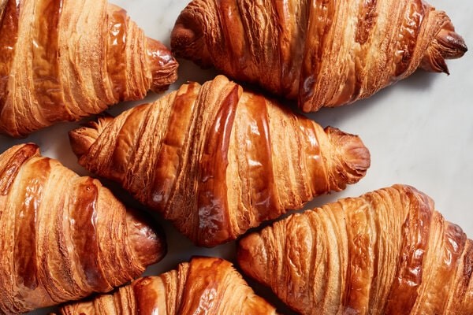
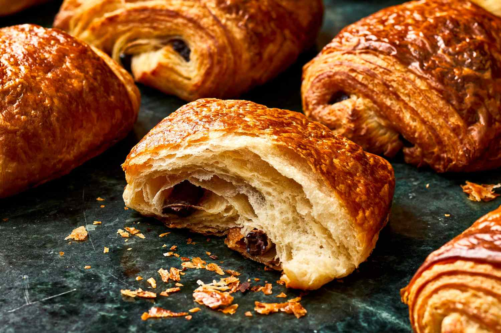
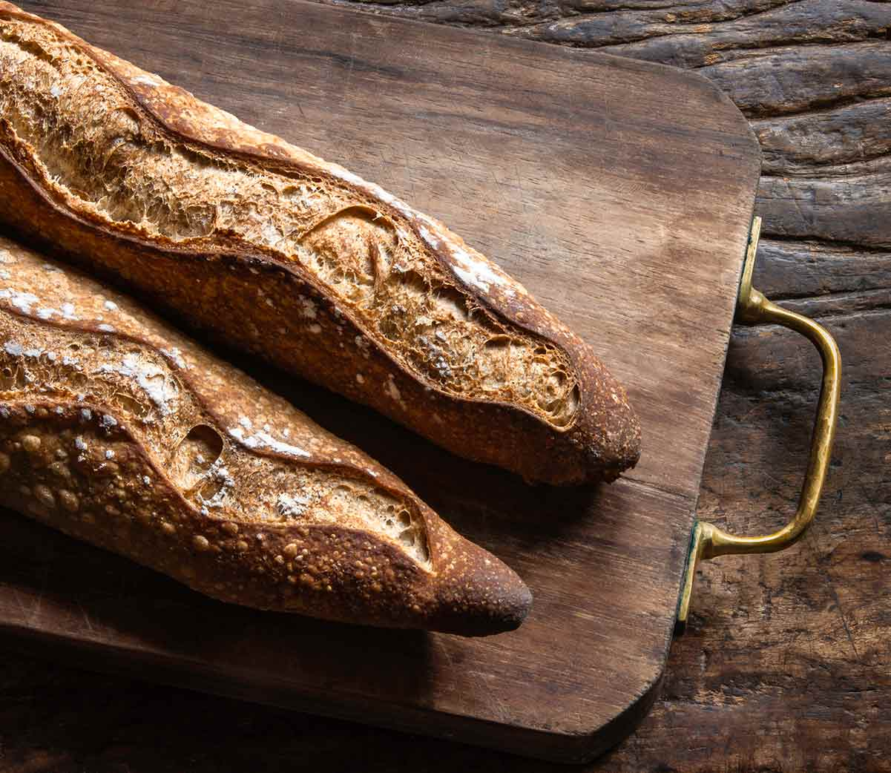
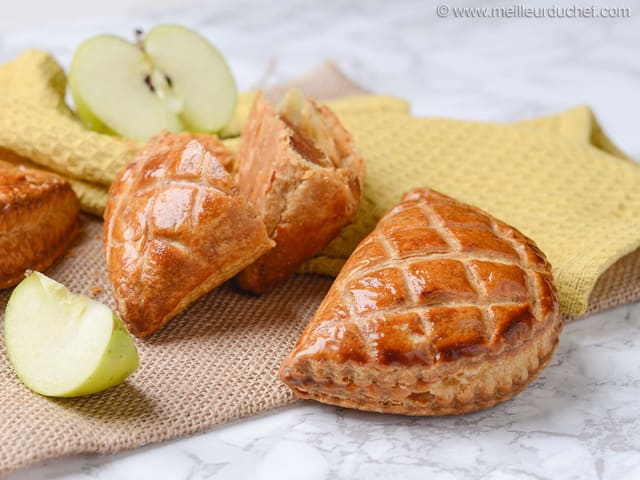
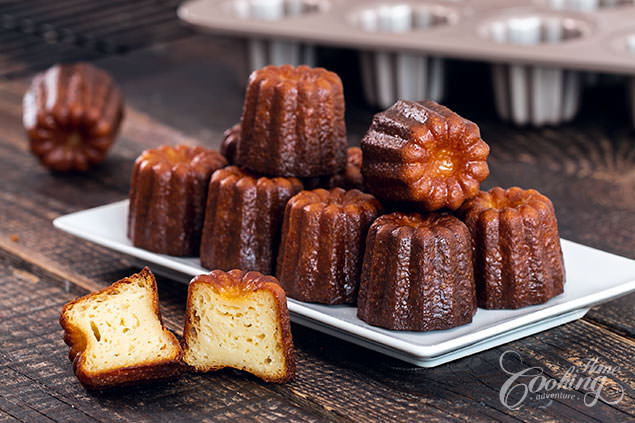
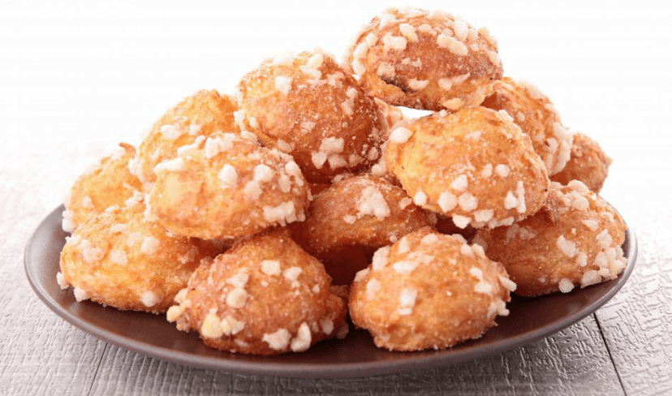
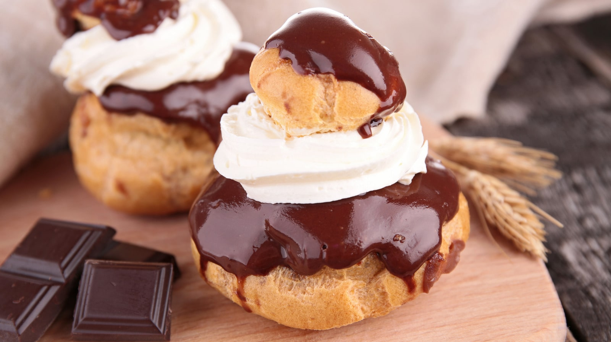
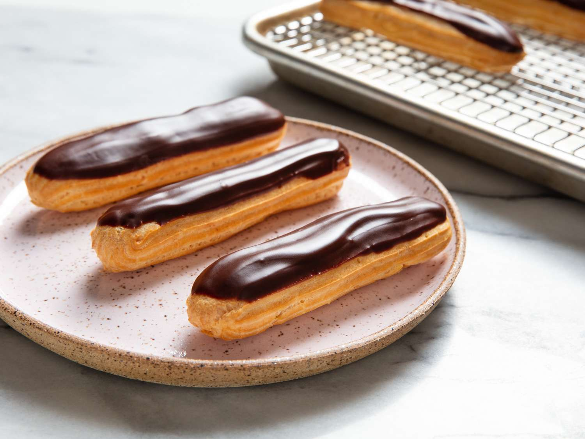
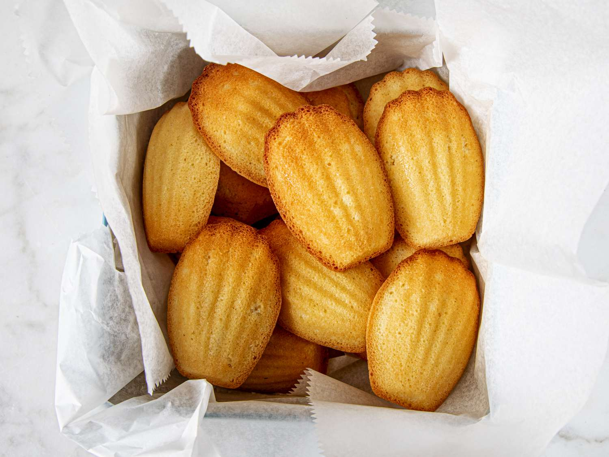
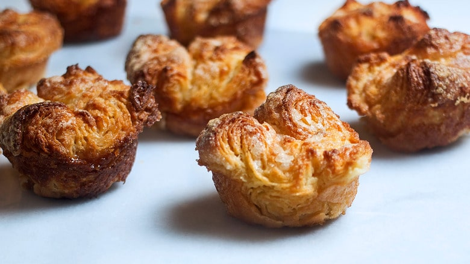

Avoid an awkward Boulangerie experience and use this table to learn your croissants from your chausson aux pommes.
| Photo | Name | Description | Ingredients |
|---|---|---|---|
|  | Croissant | A flaky, buttery pastry known for its crescent shape and delightful layers. | butter, flour, sugar, salt, yeast, and milk |
|  | Pain au Chocolat | A buttery pastry very similar to a croissant, but filled with chocolate. | chocolate, butter, flour, sugar, salt, yeast, and milk |
|  | Baguette de Tradition | A more rustic baguette with a firm crust and rich flavor | flour, salt, and yeast |
|  | Chausson aux Pommes | The french version of an apple turnover, but instead, it's called an apple slipper! | butter, applesauce, flour, sugar, salt, yeast, and milk |
|  | Canelé | A small French pastry flavored with rum and vanilla with a soft and tender custard center and a dark, thick caramelized crust. | Eggs, butter, vanilla, rum, flour, milk, sugar |
|  | Chouquettes | Chouquettes are small choux pastry puffs topped with snowy white grains of pearl sugar. | granulated sugar, salt, butter, flour, eggs, pearl sugar |
|  | Religieuse | A French pastry made of a small choux pastry case stacked on top of a larger one, both filled with crème pâtissière, commonly flavoured with chocolate or mocha. | eggs, butter, flour, milk, chocolate, cocoa powder, fondant icing |
|  | Eclair | An éclair is a pastry made with choux dough filled with a cream and topped with a flavored icing | milk, butter, sugar, salt, flour, eggs, vanilla, heavy whipping cream |
|  | Madeleine | Madeleines are very small sponge cakes with a distinctive shell-like shape acquired from being baked in pans with shell-shaped depressions. | Egg, flour, sugar, butter, vanilla |
|  | Kouign Ammann | A multi-layered pastry of dough with butter, it is made using similar techniques as making a croissant. What’s different is the generous amount of sugar in and on top of it, and the caramelised golden crust | yeast, flour, butter, sugar |